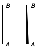
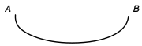

Беседа 2556 от 3877 · Беинса Дуно
Път, истина и живот
Добрата молитва.
Кои са основните положения на миналата лекция? (Един брат ги изложи.)
Сега ми кажете: Защо противоречието за едного, не е противоречие за другиго? Вземете една детска дреха, не представлява противоречие за самото дете, но ако един възрастен човек иска да облече тая дреха, ще се намери в противоречие. Има ли нещо лошо? Няма нищо лошо! Това е едно несъответствие, че малката дреха на малкото дете не може да стане дреха на възрастния. Това е едно механическо изяснение. Някой път ние виждаме, че някои неща са лоши. Не е лошо, но то е едно несъответствие. Има нещо лошо в света. Например, заболи те зъб. От какво произтича това? Някой път присъствието на някой елемент образува болка, а отсъствието на някои неща пак става причина за болка. Присъствието на някой елемент става причина да се появи радост и да си здрав. А пък отсъствието на някои елемент, може да роди болест, това което наричат хранителни вещества. Хранителните вещества не са още изучени. Сега, съвременната наука казва, че кислородът поддържа горенето. Тъй е повидимому. Но кислородът е само проводник, а горенето иде от другаде. Сега няма какво да спорим. Проводник е кислородът. И като знаем този проводник, ще знаем, че той води другото, което не знаем. И ще знаем, че това, което иде чрез кислорода, поддържа горението. Сега всеки един човек на земята е един елемент. Има известни хора, които като дойдат при тебе, веднага ще произведат в тебе горение. Сега изучавайте нещата като ученици. Вземете един елемент: младата мома е елемент. Момата в дадения случай е кислород. Тя като дойде при един момък, който е водород, тя ще произведе в него веднага повишение на температурата. Можете да констатирате това на физическото поле. Измерете температурата му преди тя да е дошла и след нейното идване. Кислородът значи е повишил температурата му. Сега това са научни работи. Ще каже някой: „Как ще повиши? Може ли една мома да повишава температурата?“ Повишава! Той става по-пъргав! Сега тия, които изучават насекомите, виждат какво е движението им при обикновената температура. Колкото се повишава температурата, увеличава се и движението им. И обратно. Това е до известна граница. Колкото по-голяма температура има човек, толкоз той е по-пъргав. Някой, който няма температура, е студен, не се движи, индиферентен е, няма идеал. При индиферентния турете младата мома, кислородът, и веднага той ще стане друг! Сега питам: Всичкото това, което младата мома произвежда в младия момък, в момата ли е, момата ли го произвежда? Тя даже някой път не подозира това, което тя произвежда. Той гори от четиритях страни, но тя не подозира. Но тя е станала причина за повишение на температурата му, той да гори. Тогаз се събират майка му, баща му и се питат: „Какво да се направи?“ Той казва: „Изгори ме! Изгори ме!“ Сега като се разисква за тия работи, вие имате съвсем повърхностно понятие. Казвате: „Той се е влюбил. Тича подире ѝ!“ Как няма да тича! Ще тичаш и оттатък ще минеш. Аз веднаж забелязах един земледелец впрегнал каруцата с кон и кара бързо. Тичат конете му. И отподир една крава и тя тича! Каруцата тича и кравата тича подире ѝ! Гледам, тя не е вързана. Не съм видял крава да тича така подир каруца. Направи ми впечатление. Обърнах се, видях, че телето на кравата е вътре в каруцата, и тя горката тича. Тича и реве! Мучи отподир! Сега някой ще каже: „Празна работа е това“. Има нещо, което свързва тая крава с телето. А пък този човек взел телето и кравата върви, инак да я върже с въжето няма да върви. Има нещо, което е запалило кравата и тя тича отподир. Такова е положението на младата мома и момъка. Момата е телето. Ние трябва да говорим на един разбран език. Да знаеш какви сили действуват, какъв проводник са момъка и момата, да имаш едно правилно понятие за онова, което е. Онова, което заставя човека да тича, то е извън самия човек, т.е. не е в този човек, когото ние виждаме на земята. Някой път ще забележите, че сте в тялото си, а някой път като че сте извън тялото. Апостол Павел казва: „Не зная дали бях в тялото или извън тялото.“ И в неразбирането се пораждат ред противоречия. Онзи, който знае да се справя с огъня, огънят ще има едно отношение с него. Онзи, който не знае как да се справя, огънят ще го изгори. Има един огън, който гори, а има един огън, който не гори. Изгарянето седи в онова неестествено положение, в което хората се намират. Тая мома, след като стане на 40–50–60 години, тя изгубва своята сила. Тая мома, която е повишавала температурата на тоя млад момък, като стане на 70–80 години, никак не повишава тяхната температура. Значи изменила се е вече. Старата баба същата ли е? Не е същата. Има останало нещо в нея същото. Тя казва: „В сърцето съм млада“. Сърцето ѝ е младо. Но както сега се изявява, оная мисъл я няма. Като мома тя е мислила за едно, а пък сега за съвсем други работи. Тогаз е мислила как да намери някой момък. А пък сега мисли как ще я погребат, дали ще има пари, дали ще ѝ поливат гроба и после като умре, къде ще отиде.
Казвате: „Говорете ни за небето! Какво е там? Как се говори на небето? Какво нещо е небето?“ Казвате: „Кажете ни за добрия живот!“ Как ще говоря за добрия живот, ако не сте го опитали, ако този живот не функционира във вас?

Дойде при мене една млада мома, която боледуваше. Казах ѝ: Ще ти дам един метод да се лекуваш. И не очаквай големи резултати. Ако приложиш този метод, след година ще дойде едно микроскопическо подобрение на здравето. И щом то дойде, то законът сам вече работи по-нататък.
Има хора, които треска ги хваща през ден. Тресе ги през ден. Щом мине треската, температурата, в тебе се заражда едно желание да ядеш – глад. Тая треска, която те кара да ядеш, тя отива с месеци, 2–3 години. На другия ден след треската се наядат. На третия ден пак те втриса. Пак минава треската, пак ядеш и т.н. Ще кажеш: „От какво произтича това?“ Съвсем е друг характерът на този глад. – Не яж! Нищо повече! Опитай се малко да постиш! С този глад и с това ядене ти поддържаш треската! После, някои болести, някои болезнени състояния не идват така изведнъж. Болестта започва да идва малко по малко, като едно неестествено състояние, и накрая се появява болката. Ти мислиш, че като дойде лекар и като даде лекарство, болестта ще си отиде. Най-новите изследвания показват, че болестта ще я повърнеш по същия начин назад. Има лекари-магнетизатори, които лекуват с ръцете си. Той ще направи известни магнетически паси и ако ти си страдал от хроническа болест от 10–15 години, болестта ще се влоши. Ти имаш силна криза. Като минеш нея, после ще дойде втора криза, тя ще бъде малко по-слаба. После могат да минат 1000 кризи. После ще дойде най-малката криза и болестта ще си излезе. Този закон навсякъде съществува. Вие не можете да поправите живота си изведнъж. И не можете да го развалите изведнъж.
Та казвам: Когато работите във всичките направления, започнете с малките работи, които да усвоите. Нещо, което знаеш, положително да го разбираш, а не да мислиш, че го разбираш.
Например, как ще произнесеш думата „благост“? Ония, които са създали азбуката, не външния знак, но това, което трябва да изкажеш – те са били много умни. Те са разбирали природата. Първите хора, които създадоха езика, те са гении от първа степен. Сегашните хора, колкото и да са учени, не могат да се сравнят с тях. Чудни са съвременните хора, като казват, че ние съвременните хора сме по-умни, отколкото първите хора. То е възможно само в този смисъл: Един грънчар като прави грънци, първите му грънци няма да бъдат толкоз хубави, те са по-прости. И постепенно той ще ги прави по-хубави и последните гърнета ще бъдат най-хубави. Същото е и за художника. Първите му произведения, колкото и да бъде той гениален, ще бъдат посредствени. А пък после, след 10–15 години, той ще нарисува най-хубавите си картини. Та сега тия хора, които съществуват на земята, зависи от коя възраст са. Тия художници са направили това гърне, но зависи от коя възраст е. Ти си картина направена от художник, но всички картини не са направени от художника едновременно и нямат еднаква цена. Ти казваш: „Господ направил човека“. Изведнъж даваш един замах. Че как като те е направил Господ, ти да си в това състояние! Ти може да си едно копие. Аз говоря за тялото. Тялото може да е едно копие. И тялото трябва да се подобри. Вие, които нямате начин за наблюдение, не сте наблюдавали, не сте посветили 3–4 години да изучавате тялото, да видите къде се крие тайната на човека. Като погледнеш челото на човека, да видиш дали е търпелив или не, дали е талантлив или не, дали е музикален или не, дали е умен или не. Той може да се показва, че е търпелив, но ако го няма този център на челото, той не може да прояви търпението. А при друг на челото има едно място, издадено и той е търпелив, съобразителен.

Сега вие обхода трябва да имате. Сега искаш да се запознаеш с някой човек. Има бедни хора, които спъват своя прогрес. Те са крайно любопитни и наблюдателни, но не знаят как да наблюдават. И като влезат и погледнат, те произвеждат такова впечатление, че този господар усеща, че онзи иска нещо и се събира в себе си. Онзи не го предразполага. Та има известно място в човешката глава, че ако някой тури двата си пръста на това място и ги отпусне, ти ще бягаш така, като че отзад те гонят 100 мечки. (Учителят посочи центъра на страха върху главата, странично върху главата) Войниците като кажат:„Кавалерия, неприятелят иде!“, и всички бягат. А никаква кавалерия няма. Тая област произвежда това. Центърът на страха е отстрани на главата. Като бутнат някой център на главата ти, ти се докачаш. Като бутнат друг център на главата ти, ти мислиш. При друг център ставаш смирен. Тия състояния не са още истински състояния. Някой път мислиш, то не е още истинско състояние. Истинско състояние е, когато страхът не може да ти действува. Ти можеш да знаеш, че страхът може да те излъже. Не, че не трябва да го вземаш под внимание, но ще научиш езика на страха. Ако този страх ти казва нещо вярно, ще го приемеш, но някой път не показва вярно. Ще извикат: „Вълк иде!“ Няма никакъв вълк. Ще извикат: „Куче иде!“ А няма никакво куче. То е лъжливият език на страха. Извикат: „Хайдути идат“ , а няма никакъв хайдутин! Какво ти говори например стяженолюбието? Някой път то ти казва: „Сега ще ти донесат 20 – 30 000 лева“. Нищо не ти донасят! То е лъжлив език. Трябва да научиш езика на стяженолюбието.
Най-първо изучи как започва у вас гордостта. Ти седиш и мислиш, че хората не те обичат. Не е лошо това. Но трябва да изучаваш езика на човешката гордост. Виж в тебе има ли нещо, с което ти се повдигаш. Гордостта повдига човека. Трябва да се повдигне човек. За да излезеш из калта, из водата, из влагата, все трябва да дойде гордостта; и ще излезеш из калта, из водата, из влагата, все трябва да дойде гордостта и ще излезеш навън, ще се повдигнеш. Гордостта е извършила най-хубавите работи в животинското царство. Гордостта е най-високият морал на животните. Най-високият морал, който животните са създали е гордостта. У животните има гордост, която не можете да си представите. Кучето, като тръгне, дигне си опашката, има гордост. Гордостта на животните едва съставлява основа на човешката справедливост. В гордостта има подтик за справедливост. От гордостта трябва да влезеш в справедливостта. Ти не можеш да се справиш със своята гордост, ако не разбираш справедливостта. За да моделираш човешката гордост, изисква се да ѝ туриш малко страх. Ти за да възпиташ горделивия човек, за да възпиташ един горделив човек, трябва да го обичаш.
Горделивият човек мисли. Той много мисли за себе си, но в него има и доста знание. Всички нещастия, които идат в света, показват, че има една неестестественост: Ти си повече страхлив, отколкото трябва! Ти си повече горделив, отколкото трябва. Ти си станал повече милостив, отколкото трябва. А пък някой път може да си станал и по-малко отколкото трябва. Има една норма, при която човек никога не съжалява. Да знаеш да пазиш своето достойнство и достойнството на другите. Младият, когато дойде един стар човек, да стане и да му даде място. То е разбрано достойнство. Достойнството зависи от честолюбието на човека. Юпитер още не е там достойнството на човека. Достойнството зависи от разбирането. Ти искаш да бъдеш достоен. С Любов не можеш да станеш достоен. И Любовта трябва да мине през проводника на гордостта. Гордостта не е толкова лошо чувство, за да произведе в човека онова състояние на достойнство. Щом мине Любовта през гордостта, ти вече разбираш какво нещо е достойнство. Значи, удостоил си се, Значи един човек, който в съзнанието си може да възприеме знанието. Онова, което ще му даде, може да го цени.
Трябва да се пазите като се сближавате. Една млада сестра ми каза: „Иде ми да бягам!“ Като се сближите, вие се обезценявате. Обезценяването от какво става? Най-първо ти цениш един човек и после като се запознаеш с него, обезцениш го. Първоначално защо си го оценил и втори път защо не го оценяваш? Вие обезценявате не само хората, но обезценявате и духовете, които ви помагат. Обезценявате и Божията благост. Казваш: „Господ ме е забравил“. Ти туряш това, което не е. Ако те е забравил Господ, размишлявал ли си кои са причините за да те забрави някой? Аз вземам думата в обикновен смисъл. Някой път сме засегнати. Нямаме малките блага, които са ни необходими. Казваш: „Забравил ме е Господ“. Ти си болен и нито глас, нито слишане! Помолете се! Все таки, като се помолиш, едно микроскопическо подобрение ще има. Можеш да направиш опит. Боли те зъб. Нищо не му туряй. Помоли се вечерта. Болката няма да престане, но сутринта като станеш, ще видиш, че наполовина ще те боли. И като измериш температурата с инструмент, ще видиш, че топлината се е намалила. Всяка болест произвежда анормално горение. При тия болести, които се зараждат в човека, има малки астрални същества, които влизат в човека и го ядат, както червеите ядат дърветата. Дойдат в зъба и го ядат. И ако разгледате, ще видите, че те са малки червейчета. Китаецът бръкне в устата ти и извади някой червей от устата ти. Че трябва да има знание! Набъркате с пръсти си и ги изкарате! Колко ви струва знанието! Вие се оплаквате. Доста оплаквания! Знание ви трябва! Ти си беден. Заслужаваш го. Ти си достоен да бъдеш беден. Не че е наказание, достоен си! Защото Господ те опитва доколко си търпелив и умен. Иска да те оцени. После те прави богат. То е една привилегия. Но ако не разбираш сиромашията. Не можеш да разбереш богатството. Какво ще разбереш от сиромашията? Представете си, че всички са те оставили и ти си сам. Никой няма при тебе. То е едно лъжливо понятие, че никой няма при тебе. При тебе тогаз има повече хора, отколкото ти мислиш. Ако живите хора ги няма, то всичките умрели хора са при тебе. И нещо ще ти кажат: „Не се бой! Тая работа ще се уреди!“
Сега към предмета, към научния предмет. Минавате и ще минете през опитности. Някои ще минат през малки опитности, а някои ще минат през много големи опитности. Ще дойдат известни изпитания, те са дадени. Вие сте в Школата вътре. Целият свят е в Божествената Школа и на всеки човек е даден известен предмет за проучване. На тебе е даден предмета сиромашия да го изучиш – от какво произлиза тя, кои са добрите и лошите страни на сиромашията? Има една сиромашия, която е отлична, и друга, която е много лоша. Сиромах си и роптаеш, недоволен си. Или пък сиромах си и си топиш сух хляб във вода, разположен си, здрав си, мислиш добре, умът ти, сърцето ти функционират добре. Има прозорци на гащите ти, скъсани са. Няма нищо! В България между американците има един философ американец, когото аз го харесах. Той и жена му бяха противоположни. Жена му беше скържава, а той с широко сърце. Тя е докачлива, тя като готви той я бутне и тя се сърди. Неколцина от учениците той ще ги задигне и ще ги гощава, а тя в кожата си не може да се побере. Той я дразни. Хумор имаше в него. Той всичко правеше: влиза в къщи облечен с хубавите си парадни дрехи и взема четка, и с тия дрехи почва да маже. Тя се докача: „Какво правиш?“ казва тя. Той ѝ казва: „Ол райт! Няма нищо, ще ги изчистя! Нека да измажа стаите!“ Та казвам: Да замажеш стаята и да изцапаш хубавите си дрехи е за предпочитане, отколкото да пазиш дрехите си чисти и да се тревожиш отвътре. Дрехи всякога ще имаш. За външните неща не се безпокой! Защо? Докато има хора на земята, трябва да знаеш, че половината от хората мислят като тебе и всеки може да ти помогне. А пък ти се обезсърчаваш гдето не трябва. Половината от хората са против вас и половината са с вас. И като срещнеш някой човек, който ти е направил пакост, ще срещнеш някой човек, който ще ти помогне. Но работата е, че като срещнеш някой лош човек, то очите ти са отворени, много си буден и като дойде добрият, хване те дремка и ти заспиш. Замине си добрият и после пак дойде лошият. Не, след като дойде страданието, очите ти да са на четири отворени, понеже ще дойде доброто. Доброто, което иде, да не го пропуснете! Тия неща трябва да ги проверите. Ако не ги проверите, то вашата вяра не може да се усили.
Хубаво, сега ще изучавате стиха, гдето Христост казва: „Аз Съм Пътят, Истината и Животът“.
„Аз Съм Пътят“. В този път трябва да знаеш как да постъпваш.
„Аз Съм Истината“. Пътят е как да постъпваш. Истината какво означава? Ще преведеш. Истината трябва да те накара да обичаш тъй както трябва.
„И Животът“, значи да мислиш. Защото Животът ще те накара да мислиш. Животът не е удоволствие. Индусите мислят, че Животът е голяма тяжест за човека. И всички искат да се освободят от живота. Животът ще те научи да мислиш. Христос казва: „Аз Съм Пътят, Истината и Животът“.
„Аз Съм онзи Път, който научава хората добре да постъпват. Аз Съм Истината, която научава хората как да обичат. Аз Съм Животът, който научава хората как да мислят“.
„Аз Съм Пътят, Истината и Животът“. Като влезеш в този Път, ще постъпваш добре, ще работиш добре. А пък щом влезеш в Истината, ти не можеш да стоиш индиферентен, ти всички хора ще обичаш! Това е Истината! А пък щом влезеш в Живота, ти ще мислиш с всички хора и отвсякъде хубавото от тях ще вземеш. Тъй изтълкувани тия думи, вече имате една идея. Тъй е разбирал Христос. Но Той е турил това в иносказателен смисъл.
Та казвам сега: Вие сте в Школата. Някой път казвате: „Какво сме научили?“ То е един път. Разрешавайте най-малките изпитания, които имате, които ви се дават.
Тук един брат е написал какво нещо е храносмилането. (Учителят взема от масата и чете една от направените теми „Службата на храносмилането“) – Храносмилането е само един проводник. Житото, което вие вземате като храна, то е само един проводник на онзи, Божествения Живот, който ще дойде чрез житото да работи. Ако вие се храните само с ябълки, ще имате един живот. Ако се храните с круши – друг живот. Ако се храните с боб, ще имате бобов живот. Ако се храните с леща – лещов живот. Ако се храните с месо, вие не можете да имате онзи, идеалния живот. Днес само разглеждат хранителните вещества. Не! Аз разглеждам доколко храната е проводник на живота. Кой е добрият живот? Животът е добър за мене, когато животът е проводник на Божествената Мисъл. Под думата „живот“ аз разбирам: животът да е проводник на Божествената мисъл. Сега някои от вас имате нужди. Някои са млади, някои са стари. Вие имате нужда от едно знание, от проводници, да влезете в свръзка с Бога. Но не тъй по вашему както разбирате! Вие трябва да виждате Бога в тия противоречия. Страх ви е от змията. Престанете с този страх! Регулирайте този страх! Ако не можете да бутнете една жива змия, то някоя замръзнала змия. Научете се на безстрашие! Бутни я! Или това, което ти е неприятно иди, побутни го, изследвай го, виж защо ти е неприятно. Не знаеш далечната причина!
Та казвам: Сегашното ви знание за Бога, дръжте го! Всеки ден, ако вие не внесете във вас нещо ново, вие губите. Всеки ден трябва да внесете в себе си една нова Божествена мисъл. Непременно трябва с мисълта си да обиколите. И всеки ден едно малко Божествено чувство, желание трябва да добиете. И всеки ден трябва да придобиете една Божествена постъпка! То е обновяването на живота! Нещастието на хората от какво зависи? Преди година–две идва един и ми се оплаква. Много е смирен. Казва: „Много е лошо положението ми. Не зная какво да правя. Съвсем съм обезсърчен“. Той иде за да му покажа един начин, да му помогна. Аз го наблюдавам сега. Казвам му: Ще ти помогна. Той излезе навън. Идва друг някой и първият му казва: „Махни се от тук! Иди че работи!“ Казах му: Така не се говори! Че и аз мога така да говоря и аз бих могъл да му кажа така! Той не знае как да постъпва. Гледам бедните като ги туриш някъде, стават надменни. Като дойде някой брат може да ти е неприятен, но ще се обхождаш добре с него! Обхода трябва да имате! Всинца тук искате да се покажете. Вреди това! Ако не се обхождате добре, той ще се обиди. Някой иска вода. Можеш да кажеш: „Махни се оттук! Нямам вода!“ Защо да не му кажеш тихо: „Седнете! Ще ти услужа! Сега имам малко работа.“ Като не си разположен, кажи му: „Много съм занят. Аз ще ти услужа. След малко ще ти донеса вода! Седни на стола!“ Ще опиташ себе си. Някой човек като дойде, то е пратен, Господ те изпитва чрез него, нищо повече! Всякога всички вие сте на изпит. И добрите и лошите те изпитват. Някой като дойде ти казва: „Аз те разбрах вече!“ Сега не искам да се критикувате. Сега вие имате един метод, който педагогически не е правилен. Не искам от тук да вземам примери. Тук има доста примери. Отлични екземпляри има. И ако ми искат от Невидимия свят примери, мога да дам оттук. Някои сте много добри екземпляри за Небето. Трябва някого от вас да го поставим на служба. Да обидите един човек, вие сте специалисти затова.
За вас е потребно знание! Потребно е за състоянието на вашия ум, за състоянието на вашето сърце, потребно е и за вашата воля. Вие можете да четете, който и да е автор. Но тия автори, които са писали, как са писали? Например, как е писал Давид псалмите? Вие мислите, че Давид е седнал на масата като някой писател и взема перото и дращи. Не! През каква опитност е минал той! И тогаз пише. Той пише и чувствува човекът. Но ти казваш: „Аз искам да напиша нещо. Искам да напиша роман.“ Че как ще го напишеш? Той може да напише един хубав роман като се ожени, като роди деца и като дойдат всички тия опитности да ги опише. Човек да напише един верен роман, да опише това, което е приживял. Вие всички сте писатели. Аз ни най-малко не съжалявам, че двама души се карат. Аз съжалявам, че те като се карат, вие не пишете. Като се набиеш, нахукаш, като се върнеш в къщи, напиши как си го нахукал. То си има известна правдоподобност. За да му се караш, има си повод. Той взел на заем и казал, че ще ги върне и после те лъже и казва: „Нямам!“ Ти кипнеш и почваш да му четеш морал. Хубаво е. Ще му четеш всички обществени молитви. И тогаз той те обрал най-хубаво.
Нали имате вяра. Някой път вътре ще дойде едно състояние, което е опасно. Едно състояние, през което светиите са минавали. И вие ще минете. Още не сте дошли до него. Ето това състояние: Светии, които 20–30 години са се подвизавали и са мислели, че са завършили вече и са мислели да отидат при хората да им говорят, после плачат и казват: „Отиде вече всичкото!“ Тъкмо се молиш, имаш едно хубаво състояние и ще ти дойде една такава лоша мисъл на края, че всичко разваля и казваш: „Откъде този дявол!“ Тогаз вие приличате на турците. Те имат обичай: турчинът ще се измива 10–15 минути, ще измие ушите си, ръцете си, лицето си, врата си и пр. и ще направи намаз (молитва). Но случи се, че се отпусне. И като се отпусне, разваля се молитвата. Той ще отиде пак наново да се измива. Та казвам: Докато човек дойде да се самовлада! Съзнанието не е всякога будно. И разваля се молитвата. И пак ще се измие той, докато съзнанието в него уякне. Всички вие трябва да вземете тия неща предвид. Вие сте в училището. Трябва да учите. Казвате: „Главата ми побеля. Да отида аз на онзи свят“. Че на другия свят като отидеш, ще те изпитват. Тук си завършил науките си и там ще те изпитат. И така като не можеш да дадеш изпит, ще останеш между небето и земята, не те приемат в училището. Оставаш там година, две,три и после пак трябва да се върнеш назад на земята да се учиш, за да те изпитат горе. Мислите ли, че всички, които отидат на онзи свят, са приети? Казват на едного заминал: „Иване, каква е работата?“ – „Остави се, не ме приеха, скъсаха ме на един предмет“. Скъсали някои на един, два, три, четири предмета. Седят те и чакат. Не стойте като отидете на онзи свят. Вие можете да отидете на онзи свят, но няма да бъдете в училището там. Сега аз се спирам върху законите. Аз само ви насочвам върху законите. Не се спирайте върху личния живот. – „Какво ще мислят хората заради мен?“ Може да казват, че съм лош. – „В какво съм лош?“ – Най-лошият човек, който ме мрази, аз мога да го накарам в 5 минути да ме обикне. Не е мъчна работа. Ще му дам една кесия с 1000–2000 английски лири стерлинги. И всичката му омраза ще се стопи. Аз знам, че той има нужди, жена му, децата му се нуждаят. Всички ще си изменят мнението за мен. Седи някой и е неразположен спрямо мен. Потупам го, назнача го на някоя висока служба в държавата и той веднага си измени неразположението. Някой е неразположен спрямо мен, мрази ме. Аз имам красива дъщеря. Дам му я. Веднага сърцето му се отвори. Ако не даваш, работата не се оправя. Може ли с „извинете“ да се оправи? Не с извинение. Младата мома като дадеш и всичко ще се оправи. Елемент е младата мома! Един ден пак ще го накарам да страда. Тая дъщеря, която съм му дал, ще направя да умре. И той ще я погребе и след това аз ще я съживя, и пак ще живея с нея, пак ще си я взема. И ще се освободи от него. И той ще каже: „Една хубава женица имах!“ Това е, което става в света. Това е, което Бог в света прави. Дава едно благо и си го взема, за да те опита. Това са сега вътрешните страни. Както светът мисли, те са прави. Но само с това знание на света не може да напреднете. Вие можете да знаете много, но с това знание на света не можете напред да отидете. Вие няма да отхвърлите светското знание. Ни най-малко тая опитност няма да отхвърлите. При нея ще прибавите духовното. То е по-високо разбиране на живота. Животът е един. Едното е низко разбиране, а другото е високо разбиране. Тогаз можете да намерите едно несъответствие. Че аз съм виждал светски хора, които са много щедри. Светски човек! А срещнеш някой набожен човек и искаш да ти помогне. Той е някой окултист, ще види дали е съгласно с кармата – мисли, мисли! А пък светският човек в момента изважда, човекът услужва, дава. И разписка не взема. Казвам: „Той е от нашите.“ Всеки човек, който спонтанно прави добро, той е от нашите. А пък и да мислиш, и то не е лошо.
И после, научете се да не губите ценностите. Не си изменяйте за един човек мнението. Разсъждавайте. Защото, ако при оценката направите лъжливата оценка, то и за вас ще направят такава оценка. Ценете хората! Не бързайте да си давате мнението. За 10 дни да ви дам упражнение. За 10 дена научете се да не давате никаква оценка. Да не критикувате. Не да не критикувате, обективно разглеждайте живота. Разгледайте този живот, но не влагайте мисълта, че този човек нарочно е направил това. Вие не знаете дали е нарочно. Той е направил тая картина. Разгледайте му картината. Вие казвате: „Ама че глупав човек! Рисува ли се така?“ При тия условия, при които той е рисувал картината, това може да се направи. Разглеждайте картината, но не се повръщайте да критикувате самия човек.
Или някой човек може да каже някоя дума. От думите не се съди за човека! Много пъти човек ще каже някои неща, които не трябва да ги каже. Не мислете, че всякога ние казваме това, което трябва да кажем. Научете се да слушате! Хубаво да слушате. И в хубавото слушане има следната философия: Някой човек иска да ти говори повече отколкото трябва. Ще му кажеш: „Много хубаво говориш. Имам спешна работа. Втори път пак ще те слушам“. То е учтивост. Учтивост се изисква. А пък ти кажеш: „Страшен дърдорец е този!“ Не! Ще си кажеш: „Много хубаво говори!“ Онова, което той знае, за вас може да е безсъдържателно, но той е станал проводник на това знание, което има. Нека неговото знание да мине през тебе. Нали някой път четете книга и разправяте какво писал там авторът.
Сега, да ви изведа педагогически правила. Бащата някой път не иска синът му да му каже нещо. Бащата е авторитет. При него синът трябва да бъде смирен, мнение не трябва да има синът. Ако иска да говори синът на баща си, ще му каже: „Четох една книга на виден писател и там пише така и така“. (Една котка ходи по салона и седна на един стол) Тая котка е предметно учение. Не давайте съвет на баща си. А ти хубаво го изслушай! Обичай баща си! Ако му говориш, всичкият му авторитет пада. А пък бащата като възлюби сина си, ще каже: „Учена глава е! Много ме радва!“ Пред другите хвали сина си. И синът трябва да бъде скромен. Сега някои от вас заемат положението на бащи, а други на синове. Сега, ония от вас, които са бащи, да са на положението си, а синовете да не си дават своето мнение.
Сега срещам една сестра, която казва: „Аз съм възрастна, майка съм!“ Щом си майка да знаеш, че щом постъпиш неправо, син ти може да не ти каже нищо, но вътре в себе си той схваща. Постъпката ти трябва да бъде много деликатна. Ако искате възпитание, трябва да отидете в съвременната дипломация, да видите каква изящност има в думите! Всяка дума е преценена. Той ще му държи палтото като си отива, не келнерът, а той ще му държи палтото да се облече. И ще го изпрати. Аз го харесвам това. Много е хубаво. Тия шишета са отлични, но напълнете ги с най-хубавото съдържание. Понеже вие няма да избегнете, когато и да е всички тия противоречия, които сега съществуват, ще ви сполетят. Ще дойде един ден, когато ще трябва да го направите. Направете го сега! Ти казваш: „Аз не мога!“ Но с думата „не мога“, не можеш да караш. Пак ще трябва да можеш някога. И може би при следующите условия ще бъде много по-тежко. Направи го сега! Не за хората, направи го за себе си, за ближните си, направи го за Идеалния, направи го за Бога! И всичките изпитания, които минавате, вие ги правите за три неща: за себе си, за ближните си и за Бога. Бог ви люби, ближните ви любят. Правите ги за тези три неща. И ако така правите, ще се осмислят работите ви.
Младите имат една погрешка, че казват: „Старите са извеяни“. Че кое е хубавото в света? Което не е извеяно или което е извеяно? Извеяните работи са хубави. Извеяното жито е хубаво. Български израз има: „Извеян човек е той!“ Извеяното жито е чисто и може да стане на брашно, а пък неизвеяното жито не е още готово, има слама в него. И желая вие всички да бъдете извеяни. Човек трябва да бъде посаден, да изникне, да цъфне. То е хубаво състояние. После да завърже, да узрее и да го извеят. Като мине тия положения и стане извеян, той е един отличен човек, възпитан човек. Вие сте пратени затова на земята. Ние сме пратени на земята за да извършим Волята Божия и да придобием онова, което искаме. Ние искаме сега заплата. И в Невидимия свят не дават заплата преди да свършиш работата. Когато дойдоха учениците при Христа, поискаха единият да седне отдясно на Него, а другият отляво. Христос им каза: „Аз да дам не мога, но на които е приготвено, които са достойни“. Ще се даде на тази, които са учили и работили добре. На онзи, който не се учи и който не живее добре, няма да му се даде! Това го помнете! Няма да се даде даром. Знаете ли какво нещо е „даром“? „Д А Р“ на турски значи тясно. После имаме „ОМ“, „УМ“. Значи, че през тесен път ще минеш, за да ти го дадат, а трябва да имаш ум, за да можеш да минеш през тясното. Като ти го дадат дар, ти трябва да имаш ум, за да знаеш как да го използуваш. Ако нямаш ум, никак няма да оцениш дара. Само при отличен ум, сърце и воля ти го дават. По тесния път ще минеш, за да ти го дадат дар.
Сега ще учите. Този брат е писал темата (Учителят чете темата на един брат). Идеята е такава: След като туриш храната в устата си и почнеш да я дъвчеш, енергията която е скрита се всмуква чрез нервите и ти се усещаш укрепен. Според сегашната теория, за 4 часа трябва да стане храносмилането и тогаз да приемеш енергията. А пък ти 5–10 минути след яденето усещаш енергия в себе си. Значи част от енергията се приема от нервната система. И част от симпатичната нервна система. А храносмилането е най-низшият процес, от който се изпраща храната в организма за изграждане. Има храна за изграждането на мускулите. Дето има някъде някои отслабнали членове изпраща им се храна. Тогаз в яденето за да бъдеш умен, умни храни трябва да ядеш. Кои са умни? Ти най-първо ще заколиш една овца, която е най-умната. Но ако заколиш най-глупавата овца? Да ви се говори на окултен език. Ще каже някой: „Че как така?“ Че това е страдание, нали? Страданието произтича, когато едно същество не иска да умира, то е на тая степен на развитие. То счита за благо да живее. Не му създавай нещастно положение, понеже това нещастие ще влезе в тебе. Но има животни, които са готови да умрат. Умирането е един процес на трансформиране. Това животно като влезе в тебе има желание да се трансформира в тебе. Тогаз храната е естествена. Ще дадеш на това животно много по-добри условия, отколкото има отвън. И трябва да знаете, че един ден каквото сте яли, на всички млекопитаещи, пернати, на всички ще се върнете и ще им дадете условия да се върнат на земята. Вие ще станете причина, те да се върнат на земята и да прогресират. Не само това, но Господ ще ви прати да им услужите да прогресират. Бог праща ангел на един грешен човек да му служи. Той е свързан. На вашия вол, който оре на вас, ще му служите. Ще го милвате, няма да го мушкате с остен. Тия неща са неразбрани сега. Когато дойде Провидението да ви впрегне, тогаз ще станат ясни нещата. Мислете затова време! Та на всички същества, на които имате да давате, ще се върнете да им помагате. Та към всички същества трябва да имате едно правилно отношение. Сега аз мога да взема тая котка, да я хвана за опашката и да я набия, нали? Но в нея има една човешка душа, която е влязла. Човешка душа, нищо повече! Ще слуша сега. Чрез котката слуша. Откъде този ум у нея и на стол да седне! То е едно състояние на човека. Не е животинско състояние. Не е много възвишена тая човешка душа, която е влязла. Те са души, които се нуждаят. Всички животни са сега пълни само с човешки души от разни степени. Животинското Царство е пълно с тях. За предпочитане е да живееш в една котка, отколкото вън. Вън е ужасен студ, несгоди. В една котка е все таки по-хубаво място. Та зачитайте Божия закон. Учете. Мен ми е приятно, много неща сте научили. Вие сте много по-умни сега, отколкото сте били в началото. Много работи знаете. Само че, това което знаете, не сте го приложили. Някой път като проповядваш на един човек един час и го обърнеш той казва: „Защо съм такъв глупав да ходя при него да го слушам!“ То е неразбиране. За мен знанието е важно, откъдето и да иде то. Едно дете ми разправя нещо; приятно ми е. Едно дете става за мен обект да го изследвам. То носи знание със себе си. То не може да чете, но аз мога да чета, всеки човек е един лист от Божествената Книга. Радвай се, че можеш да четеш от него. И ако не можеш да го четеш, обърнете го, следующия лист ще четете. Не го считайте, че другите листове, които не сте ги разбрали, че те са неразбрани. Един човек, който ви е неприятен, не го обичате. Ще дойде друг някой, който го обича. Няма човек, когото хората да не обичат.
Сега в заключение: Кажете ми какво трябва да бъде заключението? Допуснете сега, че ви се пада едно наследство от един милион. Какво трябва да направите с него? Можете да мислите по това, но в дадения случай трябва да знаете кое е най-важното! Като имате един милион, кое е най-важното да направите и да ви тръгне напред? Щом получите един милион наследство, ще отидете при всички ония, на които дължите, които сте закърпили и на този, на онзи, ще се изплатите, ще им дадете. И колкото остане тогаз ,то е. Разплатете се, че те да благодарят. Да знаете, че Господ е пратил това благо не само за тебе; това наследство е дошло и за тях. Те всички се молят и от туй наследство и за тях има. Платете си! Туй е доброто! И след като се разплатите, повикайте тия, на които сте дължели и им дайте един хубав обед. Това е второто благо! Това е естественият път. Не е някоя голяма философия! Колко е часа? (6ч.30м.) Изгряло е Слънцето. (Станахме всички.)
Отче наш.
Гимнастически упражнения.
Времето тихо и хладно. Небето ясно.
XVI година.
3 лекция на Общия окултен клас,
държана от Учителя на 7 октомври 1936 г., сряда, 5 ч.с.
София – Изгрев.